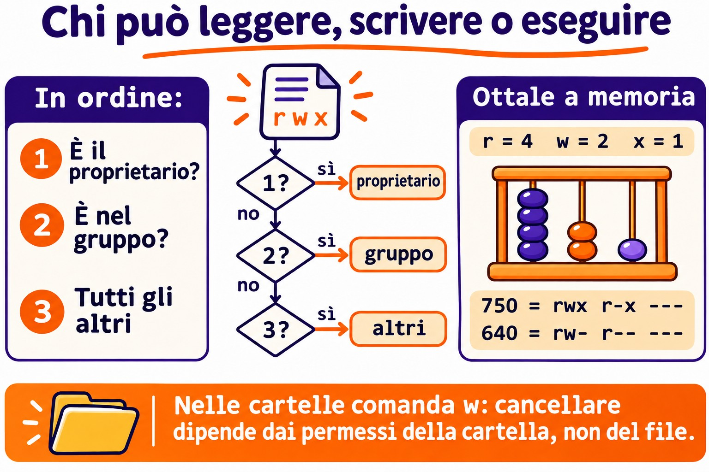

Lezione 2.7 · Permessi e proprietario
Settima lezione del Modulo 2. "Permission denied" è il messaggio di errore più comune nella vita di un sysadmin, e la risposta più comune è la peggiore: chmod -R 777. Il problema sparisce, e ne compaiono tre: chiunque cancella tutto, SSH smette di accettare la chiave e il prossimo audit segna la directory in rosso. Oggi impari a leggere le nove lettere di un ls -l come le legge il kernel, e a dare a ogni persona esattamente l'accesso di cui ha bisogno. Usi Ana, Bruno e il gruppo equipe della Lezione 2.6, con gli stessi numeri sulle due VM, per provare chi legge, chi scrive e chi cancella, e perché.
| Scheda | Lezione 2.7 |
|---|---|
| Modulo | M2 · Sistema, utenti e permessi, lezione 7 di 8 |
| Quando | Settimana 5 |
| Alla fine sei in grado di | Leggere i permessi di file e directory e dire chi può fare cosa; spiegare cosa significano r, w e x su una directory; usare chmod in modalità simbolica e ottale, anche su alberi interi senza rovinare le directory; cambiare proprietario e gruppo con chown e chgrp; prevedere e regolare l'umask; seguire una procedura quando compare "Permission denied" |
| Prerequisiti | Lezione 2.6 (Ana, UID 2001; Bruno, UID 2002; gruppo equipe, GID 2000, sulle due VM; i gruppi valgono al login); Lezione 2.5 (sudo, l'alias deb); Lezione 1.8 (permesso di esecuzione in uno script) |
| Durata | Circa 2h30 |
| Snapshot | m2a7-inicio e m2a7-fim su entrambe le VM |
1 · Riscaldamento
Tre domande, a memoria. Scrivi le risposte; le Soluzioni le verificano alla fine.
- Il file
relatorio.txtè-r--r--r-- root roote sta in una directorydrwxrwxrwx. Scommessa: Ana, che non è root, riesce a cancellarlo? - Hai creato
backup.shed è-rw-r--r--. Scommessa:./backup.shfunziona? Ebash backup.sh? - Il file
nota.txtè----rw---- ana equipe, e Ana è nel gruppoequipe. Scommessa: Ana riesce a leggere il proprio file?
2 · Perché conta
Quasi ogni ticket sui permessi cade in uno di quattro casi, e ognuno ha una risposta sbagliata che sembra funzionare:
| La richiesta | La risposta sbagliata | Cosa provoca |
|---|---|---|
| "Bruno non riesce a modificare il foglio di calcolo di Ana nella cartella del team" | chmod -R 777 /srv/equipe | Qualsiasi account della macchina, compreso quello del web server, legge, modifica e cancella tutto |
| "Lo script di backup dice Permission denied" | chmod 777 backup.sh | Chiunque può cambiare il contenuto di uno script che root esegue ogni notte |
| "Ho caricato il sito e adesso dà 403" | chmod -R 644 /var/www/site | Le directory perdono la x e nessuno ci entra, nemmeno il web server |
| "SSH ha smesso di accettare la mia chiave" | Generare un'altra chiave | Il problema era una directory con scrittura per il gruppo; sshd rifiuta la chiave di proposito |
In tutti e quattro i casi, chi risolve davvero fa la stessa cosa: chiede chi sta provando, cosa sta provando a fare e dove, e legge i permessi dell'intero percorso. È questo che alleni oggi.
3 · Modello mentale
Ogni file ha un proprietario, un gruppo e tre triple di permessi. Il kernel chiede "chi sei?" e usa una sola tripla: quella del proprietario, se sei il proprietario; altrimenti quella del gruppo, se sei nel gruppo; altrimenti quella degli altri. La prima che corrisponde decide, e le altre non vengono nemmeno guardate.
-rwxr-x---. 1 ana equipe 2048 nov 3 09:12 fechamento.sh
│└┬┘└┬┘└┬┘│ │ │
│ │ │ │ │ │ └─ grupo do arquivo
│ │ │ │ │ └────── dono do arquivo
│ │ │ │ └─ "." = tem contexto SELinux (Rocky); "+" = tem ACL (Aula 8.5)
│ │ │ └─── outros: quem não é o dono nem está no grupo --- = 0
│ │ └────── grupo: quem está no grupo equipe r-x = 5
│ └───────── dono: a ana rwx = 7
└─────────── tipo: - arquivo, d pasta, l link
octal: 750
Quem está pedindo?
é o dono? ── sim ──▶ usa rwx (e para aqui)
│ não
está no grupo? ── sim ──▶ usa r-x (e para aqui)
│ não
usa ---Le stesse lettere significano cose diverse su un file e su una directory. Questa tabella risolve metà dei ticket:
| Lettera | Su un file | Su una directory |
|---|---|---|
r (4) | Leggere il contenuto | Elencare i nomi che contiene |
w (2) | Modificare il contenuto | Creare, cancellare e rinominare ciò che contiene, qualunque sia il permesso del file |
x (1) | Eseguire come programma | Entrare nella directory e attraversarla per arrivare a qualcosa al suo interno |
Quattro idee reggono la lezione:
| Idea | Cosa significa | Conseguenza |
|---|---|---|
| Una sola tripla | Proprietario, altrimenti gruppo, altrimenti altri. Non si somma | Un proprietario con meno permessi del gruppo resta con quelli del proprietario |
| Cancellare riguarda la directory | Cancellare un file cambia la directory, non il file | Un file r--r--r-- in una directory con w può essere cancellato |
| Conta l'intero percorso | Per arrivare a /srv/a/b/c.txt, ti serve x su /, /srv, /srv/a e /srv/a/b | Un file rw-rw-rw- dentro una directory senza x è irraggiungibile |
| La nascita decide | Ogni file nuovo nasce con il gruppo principale di chi l'ha creato e con l'umask di chi l'ha creato | La maggior parte dei problemi di cartella condivisa è il gruppo o l'umask sbagliato al momento della creazione |

4 · Concetto a livelli
Essenziale
Leggere. ls -l mostra le lettere; stat mostra anche il numero, che è quello che digiterai in chmod.
ls -l /etc/passwd /etc/shadow
ls -ld /tmp /home/rodrigo
stat -c '%A %a %U:%G %n' /etc/passwd /etc/shadow /tmp-rw-r--r--. 1 root root 1532 nov 3 08:10 /etc/passwd
----------. 1 root root 987 nov 3 08:10 /etc/shadow
-rw-r--r-- 644 root:root /etc/passwd
---------- 0 root:root /etc/shadow
drwxrwxrwt 1777 root:root /tmpIl -d di ls -ld mostra la directory stessa, invece di ciò che contiene. /etc/shadow con 0 non è un errore: nessuno ha permessi, e solo root, che scavalca i permessi di lettura e scrittura, riesce a leggerlo. La t in fondo a /tmp e l'1 davanti a 1777 sono lo sticky bit, argomento della Lezione 2.8. L'esempio è di rocky-lab; su debian-lab ls -l esce senza il . dopo i permessi, e /etc/shadow compare come -rw-r----- root shadow.
Il numero. Ogni tripla diventa una cifra sommando r=4, w=2, x=1:
| Lettere | Conto | Cifra | Uso tipico |
|---|---|---|---|
rwx | 4+2+1 | 7 | Proprietario di directory o script |
rw- | 4+2 | 6 | Proprietario di file comune |
r-x | 4+1 | 5 | Gruppo di directory o script |
r-- | 4 | 4 | Sola lettura |
--- | 0 | 0 | Niente |
I numeri che digiterai quasi sempre: 644 e 755 (valori comuni per file e directory pubblici), 640 e 750 (legge solo il gruppo), 600 e 700 (solo il proprietario), 660 e 770 (il gruppo lavora insieme).
Cambiare i permessi: chmod. Due modi di dire la stessa cosa:
chmod 750 fechamento.sh # ottale: imposta le tre triple in una volta
chmod u=rwx,g=rx,o= fechamento.sh # simbolico: lo stesso risultato
chmod u+x backup.sh # simbolico relativo: aggiunge x al proprietario, non tocca nient'altro
chmod g-w,o-r planilha.csv # toglie w al gruppo e r agli altri
chmod a+r leiame.txt # a = all, le tre triple| Parte | Significa |
|---|---|
u, g, o, a | Proprietario (user), gruppo, altri, tutti |
+, -, = | Aggiunge, toglie, imposta esattamente (ciò che non è scritto diventa -) |
r, w, x | I permessi |
L'ottale è ottimo per impostare l'intero stato. Il simbolico relativo è ottimo per cambiare una cosa senza sapere o senza toccare il resto. Solo il proprietario del file e root possono eseguire chmod su di esso.
Cambiare proprietario e gruppo: chown e chgrp.
sudo chown ana planilha.csv # cambia il proprietario
sudo chown ana:equipe planilha.csv # proprietario e gruppo
sudo chown :equipe planilha.csv # solo il gruppo
chgrp equipe planilha.csv # solo il gruppo, senza sudo, se sei il proprietario e sei nel gruppo
sudo chown -R ana:equipe /srv/projeto # l'intero alberoSolo root cambia il proprietario di un file. Un utente comune può cambiare il gruppo di un suo file, ma solo verso un gruppo di cui fa parte.
Intermedio
L'umask. I programmi che creano file chiedono, in genere, 666 per i file e 777 per le directory. L'umask è la lista di ciò che togliere da quella richiesta:
umask | File nuovo | Directory nuova | Dove compare di solito |
|---|---|---|---|
0022 | 644 rw-r--r-- | 755 rwxr-xr-x | root; utenti comuni su Debian |
0002 | 664 rw-rw-r-- | 775 rwxrwxr-x | Utenti comuni su Rocky, che hanno un gruppo personale tutto loro |
0027 | 640 rw-r----- | 750 rwxr-x--- | Server rinforzati, script che generano dati interni |
0077 | 600 rw------- | 700 rwx------ | Script che generano chiavi, password, dump di database |
umask # 0022, per esempio
umask -S # u=rwx,g=rx,o=rx: ciò che RESTA, in lettere
umask 027 # solo per questa shell e per ciò che apreL'umask non aggiunge mai permessi. Un file nuovo non nasce con x, qualunque sia l'umask, perché il programma ha chiesto 666: per questo ogni script nuovo ha bisogno di chmod u+x. L'umask vale per il processo e per tutto ciò che apre; il valore predefinito di ogni login viene da /etc/login.defs e dai file di inizializzazione della shell, e il tuo ~/.bashrc può cambiarlo per te.
Provare come un'altra persona. Invece di chiedere ad Ana di riprovare, chiedi al kernel:
sudo -u ana cat /srv/equipe/planilha.csv
sudo -u ana test -w /srv/equipe/planilha.csv && echo "a Ana pode escrever"
namei -l /srv/equipe/planilha.csvsudo -u ana esegue il comando come Ana, con i suoi gruppi, senza chiedere la sua password. namei -l mostra proprietario, gruppo e permessi di ogni directory del percorso, da / fino al file. È lo strumento numero uno quando il file sembra a posto e l'accesso fallisce comunque.
Altri strumenti che evitano errori:
install -m 640 -o ana -g equipe modelo.csv /srv/equipe/ # copia già con modo, proprietario e gruppo
install -d -m 770 -o root -g equipe /srv/equipe # crea la directory già con modo, proprietario e gruppo
cp -p origem destino # copia mantenendo modo, proprietario (se sei root) e date
chmod --reference=modelo.csv novo.csv # copia i permessi di un altro filecp senza -p crea il file nuovo come tuo, con il tuo umask: per questo un file copiato da un altro server "perde" i permessi.
Ponte Windows
| In Windows | In Linux | La differenza che frega |
|---|---|---|
| Scheda Sicurezza, elenco di utenti e gruppi | Tre triple: proprietario, un gruppo, altri | Nel Linux standard, un file ha un gruppo. Per averne di più ci sono le ACL (Lezione 8.5) |
| I permessi si sommano, e Nega vince | Usa la prima tripla che corrisponde, senza sommare | Il proprietario con meno permessi del gruppo resta con quelli del proprietario |
| "Tutti: Controllo completo" | 777 | Lo stesso errore, con lo stesso risultato |
| "Take ownership" (prendi proprietà) | sudo chown | Su Linux, solo root cambia il proprietario |
| Ereditarietà dei permessi dalla cartella madre | Non esiste; decidono l'umask e il gruppo di chi crea | Un file nuovo non eredita i permessi della directory. Il gruppo può essere ereditato con il setgid (Lezione 2.8) |
| Eliminare è un permesso del file | Cancellare è il permesso w della directory | Un file in sola lettura può essere cancellato da chi scrive nella directory |
Avanzato
Root e la x. Root scavalca r e w su qualsiasi file, e r e x su qualsiasi directory. Ma, per eseguire un file, anche root ha bisogno che almeno una delle tre triple abbia x. Per questo sudo ./backup.sh fallisce su uno script 644.
Il permesso viene controllato all'apertura. Il kernel controlla i permessi quando il processo apre il file. Un processo che aveva già il file aperto continua a leggere e scrivere dopo un chmod 000. Nella vita reale: togliere il permesso a un log non ferma il servizio che ci sta già scrivendo.
Senza r su una directory, con x. Una directory 711 (rwx--x--x) lascia entrare gli altri e aprire un file il cui nome conoscono già, ma non lascia elencare. È così che i vecchi server rendevano ~/public_html accessibile al web server senza esporre l'elenco dei file della home.
Gli indicatori dopo le lettere. Un . dopo i permessi significa che il file ha un contesto SELinux, la norma su Rocky. Un + significa che c'è una ACL, permessi extra oltre alle tre triple, che ls -l non mostra; getfacl arquivo la mostra. Se le tre triple dicono che si può e l'accesso fallisce, la causa è in uno di questi due livelli: Lezione 8.5 per le ACL, Lezione 12.3 per SELinux.
La quarta cifra. stat a volte mostra quattro cifre, come l'1777 di /tmp. La prima è quella dei permessi speciali: setuid (4), setgid (2) e sticky (1). È la Lezione 2.8.
5 · Rocky × Debian
| Cosa | Rocky 9 | Debian 13 |
|---|---|---|
umask di un utente comune | In genere 0002 (ognuno ha un gruppo personale, quindi il gruppo può ottenere w) | In genere 0022 |
umask di root | 0022 | 0022 |
Modo della home creata da useradd -m | 700 (HOME_MODE 0700 in login.defs) | Dipende dal login.defs della versione: 700 o 755. Verifica con ls -ld /home/* |
Indicatore dopo i permessi in ls -l | . (contesto SELinux) | Niente, o + quando c'è una ACL |
/etc/shadow | 0 (----------), proprietario root:root | 640 (-rw-r-----), gruppo shadow |
Gruppo di chi usa sudo | wheel | sudo |
namei, stat, install | Nel pacchetto base (util-linux, coreutils) | Uguale |
| Quando le triple dicono "si può" e l'accesso fallisce | Sospetta di SELinux (ls -Z, Lezione 12.3) | Sospetta della ACL o di AppArmor, che lavora per programma e non per file |
6 · Lab guidato
In questo lab sei rodrigo, con sudo, e provi tutto come Ana e come Bruno con sudo -u. Nessuno deve digitare la password di nessuno: il kernel risponde per loro, con i gruppi che hanno davvero. Gli esperimenti stanno in /srv/lab27, che puoi pasticciare a piacere. La directory /srv/equipe, creata nel Passo 5, resta per la Lezione 2.8, che conclude la sfida del modulo su di essa.


Passo 0 · Snapshot e la strada verso debian-lab
Su Proxmox, crea lo snapshot m2a7-inicio di entrambe le VM. Su rocky-lab, verifica il percorso fino a debian-lab e gli account della Lezione 2.6:
eval "$(ssh-agent -s)"; ssh-add
ssh -o BatchMode=yes deb 'hostname; id -un'
id ana; id bruno
ssh deb 'id ana; id bruno'Le quattro righe di id devono mostrare uid=2001(ana) e uid=2002(bruno), entrambi con 2000(equipe) nella lista dei gruppi, su entrambe le VM. Se manca equipe in qualcuna, torna al Passo 4 della Lezione 2.6: tutto il lab dipende da questo.
Passo 1 · Leggere come legge il kernel
Su entrambe le VM (su debian-lab, prefissa con ssh deb):
stat -c '%A %a %U:%G %n' /etc/passwd /etc/shadow /etc/sudoers /tmp /home/*Per ogni riga, rispondi ad alta voce a tre domande: chi è il proprietario, qual è il gruppo e cosa riesce a fare Ana, che non è nessuno dei due. Esempio di risposta per /home/bruno con drwx------ 700 bruno:bruno: "il proprietario è Bruno; Ana non è Bruno e non è nel gruppo bruno, quindi cade in altri, ---; non entra, non elenca, non legge nulla lì dentro".
Ora conferma con il kernel, invece di fidarti della tua lettura:
sudo -u ana ls /home/bruno
sudo -u ana cat /etc/shadow
sudo -u ana cat /etc/passwd | tail -2Le prime due danno Permission denied; la terza funziona. Annota le differenze tra le VM: /etc/shadow (0 su Rocky, 640 root:shadow su Debian) e il modo delle home directory.
Passo 2 · r, w e x su una directory, una alla volta
Monta il banco di prova su rocky-lab:
sudo mkdir -p /srv/lab27/caixa
echo "conteúdo da nota" | sudo tee /srv/lab27/caixa/nota.txt >/dev/null
sudo chmod 755 /srv/lab27
sudo chmod 644 /srv/lab27/caixa/nota.txtPer ogni modo della tabella, esegui chmod e i due test come Ana, e confronta con la colonna "Atteso":
sudo chmod 755 /srv/lab27/caixa # sostituisci con il modo della riga
sudo -u ana ls -l /srv/lab27/caixa
sudo -u ana cat /srv/lab27/caixa/nota.txt| Modo della directory | Tripla degli altri | ls -l come Ana | cat nota.txt come Ana | Atteso |
|---|---|---|---|---|
755 | r-x | Elenco normale | Funziona | Entra ed elenca |
754 | r-- | I nomi compaiono, ma con ????????? ed errori cannot access | Permission denied | Elenca i nomi, non entra |
751 | --x | cannot open directory | Funziona | Entra senza elencare: chi sa il nome, apre |
750 | --- | Permission denied | Permission denied | Niente |
La riga 754 è la più strana e la più importante: r senza x dà solo l'elenco dei nomi, perché leggere i dettagli di un file (proprietario, dimensione, modo) richiede di entrare nella directory. Quando vedi ????????? in un ls -l, la directory ha r e manca x. Riporta la directory a 755 alla fine.
Passo 3 · Cancellare riguarda la directory
sudo mkdir /srv/lab27/aberta
sudo chmod 777 /srv/lab27/aberta
echo "relatório final" | sudo tee /srv/lab27/aberta/relatorio.txt >/dev/null
sudo chmod 444 /srv/lab27/aberta/relatorio.txt
stat -c '%A %U:%G %n' /srv/lab27/aberta /srv/lab27/aberta/relatorio.txt
sudo -u ana sh -c 'echo "editado" > /srv/lab27/aberta/relatorio.txt'
sudo -u ana rm -f /srv/lab27/aberta/relatorio.txt
ls -l /srv/lab27/abertaAna non riesce a modificare il file (Permission denied: il file è r-- per lei), ma riesce a cancellarlo, e ls torna vuoto. Senza il -f, rm avrebbe chiesto remove write-protected regular file?, e un "y" sarebbe bastato. Il file è di root e in sola lettura per tutti, e non ha fatto differenza: cancellare è scrivere nella directory, e la directory è 777.
Decidi 1 · Proteggere il report. Ricrei relatorio.txt e vuoi che Ana continui a leggere ciò che sta nella directory aberta, ma non riesca più a cancellare nulla lì. Cosa cambi?
- A)
sudo chmod 400 /srv/lab27/aberta/relatorio.txt - B)
sudo chmod 755 /srv/lab27/aberta - C)
sudo chown root:root /srv/lab27/aberta/relatorio.txt - D)
sudo chmod 1777 /srv/lab27/aberta
Scegli un'opzione prima di continuare.
| Se hai scelto | Risultato | Perché |
|---|---|---|
| A | ❌ Sbagliato | Hai toccato il file, e cancellare dipende dalla directory. Ana continua ad avere w sulla directory e cancella lo stesso. E adesso non legge nemmeno più il report. |
| B | ✅ Giusto | La directory diventa rwxr-xr-x: Ana cade in altri, r-x, quindi elenca ed entra, ma non crea, non rinomina e non cancella. Era la richiesta. |
| C | ❌ Sbagliato | Il file era già di root. Il proprietario del file non conta per cancellare; conta chi scrive nella directory. |
| D | ⚠️ Funziona, ma | Lo sticky bit (l'1 davanti) fa sì che ognuno cancelli solo ciò che è suo, e Ana smette di poter cancellare il report di root. Ma può comunque creare file nella directory, cosa che non era stata chiesta. È lo strumento giusto per le directory dove tutti scrivono, come /tmp: Lezione 2.8. |
Da ricordare: "chi può cancellare?" si risponde guardando la directory, mai il file.
Applica la B, ricrea il report e verifica che sudo -u ana rm -f ora dia Permission denied.
Passo 4 · chmod nei due idiomi
Nel tuo ~, come rodrigo:
printf '#!/bin/bash\necho "backup ok em $(hostname)"\n' > ~/backup.sh
stat -c '%A %a %n' ~/backup.sh
~/backup.sh
bash ~/backup.shIl file nasce senza x (644 o 664, a seconda del tuo umask), e per questo ~/backup.sh dà Permission denied. bash ~/backup.sh funziona perché a eseguire è bash, che deve solo leggere lo script. Ora, un comando alla volta, prevedendo il risultato prima di eseguire stat:
chmod u+x ~/backup.sh; stat -c '%A %a' ~/backup.sh
chmod 750 ~/backup.sh; stat -c '%A %a' ~/backup.sh
chmod g-x,o+r ~/backup.sh; stat -c '%A %a' ~/backup.sh
chmod u=rw,go= ~/backup.sh; stat -c '%A %a' ~/backup.sh
chmod a+x ~/backup.sh; stat -c '%A %a' ~/backup.shLe risposte, da verificare dopo: rwx al proprietario e il resto com'era (744 o 764); rwxr-x--- 750; rwxr--r-- 744; rw------- 600; rwx--x--x 711.
Infine, dimostra che anche root ha bisogno di x per eseguire:
chmod 600 ~/backup.sh
sudo ~/backup.sh
chmod 700 ~/backup.sh && sudo ~/backup.shIl primo sudo fallisce (a seconda della versione di sudo, il messaggio è command not found o Permission denied); il secondo funziona.
Passo 5 · Proprietario, gruppo e la directory del team
Il team vuole una directory dove Ana e Bruno lavorino insieme e nessun altro entri. Su rocky-lab:
sudo mkdir /srv/equipe
sudo chown root:equipe /srv/equipe
sudo chmod 770 /srv/equipe
ls -ld /srv/equipe
ls /srv/equipels -ld mostra drwxrwx--- root equipe, e il tuo ls /srv/equipe dà Permission denied: rodrigo non è in equipe, quindi cade in altri, ---. Per guardare dentro, da ora userai sudo. Adesso Ana crea il foglio di calcolo, e Bruno prova ad aggiungere una riga:
sudo -u ana sh -c 'echo "jan;100" > /srv/equipe/planilha.csv'
sudo ls -l /srv/equipe
sudo -u bruno sh -c 'echo "fev;200" >> /srv/equipe/planilha.csv'Bruno riceve Permission denied. ls -l dice perché: il file è nato ana ana, con il gruppo personale di Ana, non con equipe. Bruno non è Ana e non è nel gruppo ana, quindi cade in altri, r--. La directory era a posto; il file è nato con il gruppo sbagliato, perché un file nuovo prende il gruppo principale di chi lo crea.
Decidi 2 · Bruno non riesce a modificare il foglio di Ana. È arrivato il ticket. Cosa fai?
- A)
sudo chmod -R 777 /srv/equipe - B)
sudo chgrp equipe /srv/equipe/planilha.csv && sudo chmod g+w /srv/equipe/planilha.csv - C)
sudo chown bruno /srv/equipe/planilha.csv - D)
sudo usermod -aG ana bruno
Scegli un'opzione prima di continuare.
| Se hai scelto | Risultato | Perché |
|---|---|---|
| A | ❌ Sbagliato | Risolve Bruno e apre la directory a tutti gli account della macchina, servizi compresi. E non risolve niente per il prossimo file: nasce di nuovo con il gruppo sbagliato. |
| B | ✅ Giusto | Il file passa al gruppo equipe e il gruppo ottiene w. Bruno, che è in equipe, cade nella tripla del gruppo, rw-. Ana avrebbe potuto fare lo stesso senza sudo, perché è la proprietaria ed è in equipe. |
| C | ❌ Sbagliato | Adesso Bruno modifica e Ana, che ha creato il foglio, cade nella tripla degli altri. Hai solo cambiato chi si lamenta. |
| D | ⚠️ Funziona, ma | Bruno entra nel gruppo personale di Ana e ottiene accesso a tutto ciò che lei creerà con il gruppo ana, in qualsiasi punto della macchina, anche fuori dalla directory del team. I gruppi personali esistono proprio per non essere condivisi. |
Da ricordare: in una directory condivisa, il file deve essere del gruppo del team e avere w per il gruppo. Correggi il gruppo, non aprire agli altri.
Applica la B e verifica:
sudo -u bruno sh -c 'echo "fev;200" >> /srv/equipe/planilha.csv'
sudo cat /srv/equipe/planilha.csv
sudo -u bruno sh -c 'echo "rascunho" > /srv/equipe/notas-bruno.txt'
sudo ls -l /srv/equipeHa funzionato per il foglio, e il problema è tornato nel file nuovo di Bruno: notas-bruno.txt è nato bruno bruno. Correggere file per file non scala. La soluzione definitiva è il bit setgid sulla directory, che fa ereditare il gruppo equipe a ogni file nuovo: è la prima cosa della Lezione 2.8. Per ora, lascia così.
Passo 6 · L'umask che hai, e quello che vuoi
Misura l'umask di ognuno, su entrambe le VM, con un login completo (su - passa per gli stessi file di inizializzazione di un login vero):
umask
sudo su - ana -c umask
sudo su - root -c umask
ssh deb umask
ssh -t deb 'sudo su - ana -c umask'Annota i cinque valori. La sezione 5 dice cosa di solito compare, ma conta ciò che ha risposto la tua VM: le due distribuzioni decidono l'umask degli utenti con gruppo personale per strade diverse, e questo è già cambiato tra una versione e l'altra. Ora guarda l'effetto:
mkdir ~/umask-teste && cd ~/umask-teste
touch padrao; mkdir dpadrao
( umask 027; touch a027; mkdir d027 )
( umask 077; touch a077; mkdir d077 )
stat -c '%a %A %n' *
cd ~Le parentesi eseguono ogni umask in una subshell, e la tua shell torna normale alla riga successiva. Atteso: a027 640, d027 750, a077 600, d077 700; padrao e dpadrao seguono l'umask che hai annotato.
Decidi 3 · Il dump con le password. Uno script di root, eseguito da cron, fa il dump del database in /backup/banco.sql. Il file contiene password degli utenti dell'applicazione. Oggi nasce 644. Qual è la correzione giusta?
- A) Un
chmod 600 /backup/banco.sqlsubito dopo il dump, in fondo allo script - B) Un
umask 077nella prima riga dello script, prima del dump - C)
sudo chmod 777 /backup, perché il file erediti i permessi della directory - D) Un
umask 777nella prima riga dello script
Scegli un'opzione prima di continuare.
| Se hai scelto | Risultato | Perché |
|---|---|---|
| A | ⚠️ Funziona, ma | Durante tutto il dump, che può durare minuti, il file resta 644 e qualsiasi account legge le password. E se il dump fallisce a metà, il chmod finale non viene nemmeno eseguito. |
| B | ✅ Giusto | Il file nasce già 600. Non esiste nessuna finestra. Insieme a una directory /backup a 700, è il modello per qualsiasi script che genera segreti. |
| C | ❌ Sbagliato | Su Linux, un file nuovo non eredita i permessi della directory. E adesso qualsiasi account cancella e sostituisce i backup. |
| D | ❌ Sbagliato | Il file nasce 000. Root riesce comunque a scriverlo, perché scavalca r e w, ma qualsiasi altro strumento di ripristino o copia che non giri come root si rompe, e anche una directory creata dallo script nasce 000. Chiudere tutto non è configurare. |
Da ricordare: chi genera un segreto definisce l'umask prima di generarlo. Correggere dopo significa lasciare la porta aperta mentre cerchi la chiave.
Passo 7 · chmod -R senza rovinare le directory
Il sito di prova, con il classico errore dell'upload:
sudo mkdir -p /srv/lab27/site/img
echo '<h1>ok</h1>' | sudo tee /srv/lab27/site/index.html >/dev/null
sudo touch /srv/lab27/site/img/logo.png
sudo chmod -R 644 /srv/lab27/site
sudo -u ana cat /srv/lab27/site/index.html
sudo find /srv/lab27/site -printf '%M %p\n'Ana riceve Permission denied, anche con index.html rw-r--r--. find mostra il motivo: le directory site e img sono rimaste drw-r--r--, senza x, e nessuno attraversa una directory senza x. È il "403 dopo l'upload" della sezione 2.
Decidi 4 · Sistemare il sito. Vuoi directory 755 e file 644, sull'intero albero. Quale comando?
- A)
sudo chmod -R 755 /srv/lab27/site - B)
sudo chmod -R u=rwX,go=rX /srv/lab27/site - C)
sudo find /srv/lab27/site -type d -exec chmod 755 {} + -o -type f -exec chmod 644 {} + - D)
sudo chmod 755 /srv/lab27/site
Scegli un'opzione prima di continuare.
| Se hai scelto | Risultato | Perché |
|---|---|---|
| A | ⚠️ Funziona, ma | Il sito torna, e ogni file diventa eseguibile, compreso logo.png e qualsiasi upload. Su un web server, un file di dati con x è un invito a eseguire ciò che non dovrebbe. |
| B | ✅ Giusto | La X maiuscola dà x solo alle directory e ai file che hanno già x in qualche tripla. Poiché -R 644 ha tolto la x a tutti i file, ne ottengono solo le directory. Un comando, risultato esatto. |
| C | ✅ Giusto | Più lungo e più esplicito: directory da una parte, file dall'altra. È ciò che usi quando la X non basta, per esempio quando qualche file ha una x indebita che vuoi togliere anche. |
| D | ❌ Sbagliato | Si corregge solo la directory in cima. img continua senza x e il logo continua rotto. |
Da ricordare: con chmod -R, usa la X maiuscola o separa directory e file con find. chmod -R con un solo numero tratta directory e file come se fossero la stessa cosa, e non lo sono.
Esegui la B, ripeti il cat come Ana e il find, e verifica drwxr-xr-x sulle directory e -rw-r--r-- sui file.
Passo 8 · La procedura per "Permission denied", e lo stesso su debian-lab
Quando l'accesso fallisce, segui sempre lo stesso ordine. Prova con il file che Bruno ha creato nel Passo 5, che Ana cerca di modificare:
sudo -u ana sh -c 'echo "revisado" >> /srv/equipe/notas-bruno.txt'
sudo namei -l /srv/equipe/notas-bruno.txt
sudo -u ana test -w /srv/equipe/notas-bruno.txt && echo "pode escrever" || echo "não pode"namei va con sudo perché rodrigo non attraversa /srv/equipe: senza, la diagnosi stessa darebbe Permission denied. L'ultima riga di namei mostra bruno bruno, e la risposta esce dalla domanda 4 della tabella.
| Domanda | Comando | Cosa cerchi |
|---|---|---|
| 1. Chi sta provando? | id bruno (e l'utente del servizio, se è un servizio) | I gruppi veri, anche se il login è precedente all'ingresso nel gruppo |
| 2. A fare cosa? | Leggere, scrivere, eseguire, entrare, creare o cancellare | Creare e cancellare sono permessi della directory |
| 3. Il percorso lascia arrivare? | namei -l caminho | Una directory senza x per quella persona, a qualsiasi livello |
| 4. Quale tripla corrisponde? | stat -c '%A %U:%G' arquivo | Proprietario, altrimenti gruppo, altrimenti altri. Una sola |
| 5. Le triple dicono "si può" e fallisce? | ls -l (cerca + o .), ls -Z, mount | ACL, SELinux, file system montato ro o noexec: livelli delle Lezioni 8.5, 12.3 e 5.x |
Ora ripeti su debian-lab i Passi 5 e 7, che sono quelli che lasciano stato per la Lezione 2.8:
ssh -t deb 'sudo mkdir -p /srv/equipe && sudo chown root:equipe /srv/equipe && sudo chmod 770 /srv/equipe'
ssh -t deb 'sudo -u ana sh -c "echo jan\;100 > /srv/equipe/planilha.csv" && sudo chgrp equipe /srv/equipe/planilha.csv && sudo chmod g+w /srv/equipe/planilha.csv'
ssh -t deb 'sudo -u bruno sh -c "echo fev\;200 >> /srv/equipe/planilha.csv" && sudo ls -l /srv/equipe && sudo cat /srv/equipe/planilha.csv'
ssh -t deb 'sudo namei -l /srv/equipe/planilha.csv'Il risultato deve essere lo stesso di rocky-lab: drwxrwx--- root equipe sulla directory, -rw-rw-r-- ana equipe sul foglio, con le due righe dentro. Poiché gli UID e il GID sono uguali sulle due VM (Lezione 2.6), un rsync della directory tra loro manterrebbe i proprietari corretti.
7 · Rompi e ripara
Guasto A · La chiave SSH che non entra più
Lo scenario: qualcuno ha voluto "facilitare" e ha dato scrittura al gruppo sulla sua home su debian-lab. Prima di rompere, apri una sessione su debian-lab dal tuo PC e lasciala aperta: è la tua via di ritorno. Se va tutto storto, lo è anche la console della VM su Proxmox. Poi, su rocky-lab:
ssh deb 'stat -c "%A %a %U:%G %n" ~ ~/.ssh ~/.ssh/authorized_keys'
ssh deb 'chmod g+w ~'Osserva. Prova a entrare di nuovo, da rocky-lab:
ssh -o BatchMode=yes deb hostnamerodrigo@10.1.0.52: Permission denied (publickey,password).La chiave è la stessa di cinque secondi fa, authorized_keys non è cambiato e il server rifiuta. La sessione che hai lasciato aperta continua a funzionare: il permesso viene controllato solo nei login nuovi.
Diagnostica. Il client non sa il motivo; il server sì. Nella sessione aperta di debian-lab:
sudo journalctl -u ssh -n 20 --no-pager
ls -ld ~ ~/.ssh ~/.ssh/authorized_keysAuthentication refused: bad ownership or modes for directory /home/rodrigosshd ha una regola chiamata StrictModes, attiva per impostazione predefinita: se la home, ~/.ssh o authorized_keys possono essere modificati da qualcuno oltre al proprietario, rifiuta la chiave. Il motivo è buono: chi scrive nella tua home può sostituire l'intera tua ~/.ssh e mettere lì la sua chiave. Su Rocky, il servizio si chiama sshd e il log dice lo stesso.
Decidi A · La riparazione. Cosa esegui nella sessione aperta?
- A)
chmod g-w ~ - B) Mettere
StrictModes noin/etc/ssh/sshd_confige riavviaressh - C) Generare una chiave nuova su rocky-lab e copiarla di nuovo su debian-lab
- D)
chmod -R 777 ~/.ssh
Scegli un'opzione prima di continuare.
| Se hai scelto | Risultato | Perché |
|---|---|---|
| A | ✅ Giusto | Toglie esattamente ciò che era stato aggiunto. La directory torna al modo di prima, e sshd torna ad accettare la chiave al login successivo. |
| B | ⚠️ Funziona, ma | La chiave torna a entrare, e hai disattivato una protezione dell'intero server, per tutti gli account, pur di non correggere una directory. La directory resta sbagliata. |
| C | ❌ Sbagliato | La chiave nuova finisce nello stesso authorized_keys, dentro la stessa directory con g+w, e viene rifiutata per lo stesso motivo. Il problema non è mai stato la chiave. |
| D | ❌ Sbagliato | Peggiora: adesso anche ~/.ssh e authorized_keys sono scrivibili da tutti, e sshd ha tre motivi invece di uno. |
Da ricordare: quando SSH rifiuta una chiave che funzionava, leggi il log del server prima di toccare la chiave. "bad ownership or modes" è un problema di permessi, e la riparazione è sulla directory.
Ripara. Nella sessione aperta:
chmod g-w ~
ls -ld ~E, da rocky-lab, il test che era fallito:
ssh -o BatchMode=yes deb hostnameLa risposta debian-lab torna senza domande. Modi che sshd accetta, da tenere a mente: home senza w per gruppo e altri (700 o 755), ~/.ssh a 700, authorized_keys a 600, tutto dell'utente stesso.
Guasto B · La directory del team che nessuno raggiunge più
Lo scenario: in una "revisione di sicurezza", qualcuno ha chiuso la directory in cima. Su rocky-lab, annota il modo attuale e rompi:
stat -c '%a %U:%G %n' /srv /srv/equipe
sudo chmod 700 /srvOsserva. Ana e Bruno aprono un ticket nello stesso momento:
sudo -u ana cat /srv/equipe/planilha.csv
sudo -u bruno ls /srv/equipeLe due righe danno Permission denied. Chi risponde controlla la directory del team e il file, ed è tutto a posto: drwxrwx--- root equipe, -rw-rw-r-- ana equipe, entrambi nel gruppo.
Diagnostica. Quando il file e la sua directory sono a posto, il problema è nel percorso:
sudo namei -l /srv/equipe/planilha.csv
sudo -u ana namei -l /srv/equipe/planilha.csvf: /srv/equipe/planilha.csv
dr-xr-xr-x root root /
drwx------ root root srv
drwxrwx--- root equipe equipe
-rw-rw-r-- ana equipe planilha.csvCon sudo, namei mostra l'intera catena, e l'anello spezzato compare: srv in drwx------. Ana cade in altri, ---, e non attraversa. Eseguito come Ana, namei si ferma proprio su srv, con Permission denied, e mostra lo stesso punto dall'altro lato. Nulla sotto di esso conta.
Decidi B · La riparazione. Cosa esegui?
- A)
sudo chmod 755 /srv - B)
sudo chmod -R 755 /srv - C)
sudo chmod o+x /srv - D)
sudo usermod -aG root anae lo stesso per Bruno
Scegli un'opzione prima di continuare.
| Se hai scelto | Risultato | Perché |
|---|---|---|
| A | ✅ Giusto | Restituisce il modo che avevi annotato, che è quello predefinito delle due distribuzioni. Cambia una directory, quella che si era rotta. |
| B | ❌ Sbagliato | Ripara /srv e rovina tutto ciò che sta sotto: /srv/equipe diventa 755 (adesso qualsiasi account legge i fogli) e ogni file diventa eseguibile. Un -R per riparare una sola directory. |
| C | ⚠️ Funziona, ma | La x basta per attraversare, e Ana e Bruno tornano a lavorare. /srv diventa 701, diverso dal predefinito e dall'altro server: il prossimo admin che confronterà i due perderà tempo con questo. Se chi l'ha chiusa voleva nascondere l'elenco delle directory, mettetevi d'accordo; altrimenti, torna al valore predefinito. |
| D | ❌ Sbagliato | Non funziona, ed è pericoloso. /srv è 700: anche il gruppo root ha ---. E mettere utenti nel gruppo root dà loro lettura di tutto ciò che nella macchina è del gruppo root. |
Da ricordare: quando il file e la directory sono a posto e l'accesso fallisce, esegui namei -l. L'errore è un livello più in alto, e la riparazione è a quel livello, senza -R.
Ripara.
sudo chmod 755 /srv
sudo -u ana cat /srv/equipe/planilha.csv
stat -c '%a %n' /srv /srv/equipeIl foglio compare, e i modi tornano a 755 e 770.
La lezione
I due guasti hanno la stessa radice: i permessi dell'oggetto erano a posto e il problema stava intorno ad esso. Nel Guasto A, la chiave era a posto e la home no. Nel Guasto B, il file era a posto e la directory in cima no. Chi guarda solo il file del ticket non trova né l'uno né l'altro. L'abitudine di questa lezione: leggi l'intero percorso, e leggi il log del servizio che ha rifiutato. namei -l e journalctl rispondono in dieci secondi a ciò che chmod 777 nasconde per sempre.
8 · Trappole
| Digiti o vedi | Cosa succede | Come evitarla |
|---|---|---|
chmod -R 777 pasta | L'errore sparisce e qualsiasi account della macchina legge, modifica e cancella tutto | Correggere proprietario, gruppo e la w del gruppo; 770 o 775 sulla directory, mai 7 agli altri |
chmod -R 644 site | Directory senza x: nessuno entra, il sito dà 403 | chmod -R u=rwX,go=rX site, oppure find separando directory e file |
chmod -R 755 site | Tutti i file diventano eseguibili | La stessa X maiuscola o il find |
chmod 444 arquivo per impedire che lo cancellino | Chi ha w sulla directory cancella comunque | Togliere la w dalla directory, o sticky bit sulla directory (Lezione 2.8) |
chmod g+w ~ o chmod 777 ~/.ssh | sshd rifiuta la chiave: "bad ownership or modes" | Home senza w per gruppo e altri, ~/.ssh 700, authorized_keys 600 |
chmod 600 dopo aver generato un file con un segreto | Il file resta leggibile da tutti mentre viene generato | umask 077 prima di generare |
umask 777 o credere che l'umask aggiunga permessi | L'umask toglie soltanto; il file nuovo non ottiene mai x per colpa sua | Scegliere l'umask in base al risultato: 022, 002, 027 o 077 |
ls /srv/equipe dà Permission denied come rodrigo | Non sei nel gruppo, e l'errore è tuo, non della directory | sudo ls -l, o provare come l'utente giusto con sudo -u |
chown bruno arquivo perché Bruno riesca a modificare | Ana, che l'ha creato, perde l'accesso | chgrp equipe e chmod g+w |
????????? in ls -l | La directory ha r e non ha x per te | Dare x sulla directory a chi deve entrare |
| Le triple dicono "si può" e l'accesso fallisce | ACL (+), SELinux (.), file system montato ro o noexec | getfacl, ls -Z, mount: Lezioni 8.5, 12.3 e 5.x |
cp di un file di un'altra macchina ha "perso" i permessi | cp crea il file come tuo, con il tuo umask | cp -p come root, install -m -o -g, o rsync -a |
9 · Quiz
Dieci domande, senza consultare. Scrivi la lettera o la risposta di ciascuna e solo dopo apri le Soluzioni.
1. Scrivi in ottale: rwxr-x---, rw-r--r--, rw------- e rwxr-xr-x.
2. Il file è -rw-r--rw- ana equipe. Bruno è nel gruppo equipe. Riesce a scrivere nel file?
- A) Sì, perché gli altri hanno
rw- - B) No, perché è nel gruppo, e la tripla del gruppo è
r-- - C) Sì, perché i permessi si sommano
- D) No, perché scrive solo il proprietario
3. In una directory, cosa permette di cancellare un file che contiene?
4. Quale comando dà x al proprietario, toglie la w al gruppo e non tocca nient'altro?
- A)
chmod 744 arquivo - B)
chmod u+x,g-w arquivo - C)
chmod u=x,g=w arquivo - D)
chmod +x -w arquivo
5. Con umask 027, con quale modo nascono un file nuovo e una directory nuova? Scrivi in ottale e in lettere.
6. Una directory è drwxr-xr-- e Ana cade in altri. Cosa riesce a fare lì dentro?
- A) Elencare i nomi, senza entrare né leggere i file
- B) Entrare e leggere i file, senza elencare
- C) Elencare, entrare e leggere
- D) Niente
7. Quale comando cambia il proprietario in ana e il gruppo in equipe di /srv/projeto e di tutto ciò che contiene?
8. Ana, senza sudo, vuole passare il file relatorio.txt, che è suo, a Bruno. Cosa succede con chown bruno relatorio.txt?
9. In un chmod -R, cosa fa di diverso la X maiuscola rispetto alla x minuscola?
10. A file must be owned by user ana and group equipe, readable and writable by the owner and the group, and with no access for anyone else. Which commands achieve this?
- A)
chown ana:equipe file; chmod 660 file - B)
chown ana file; chmod 770 file - C)
chown equipe:ana file; chmod 660 file - D)
chown ana:equipe file; chmod 664 file
10 · Flashcard e promemoria
Da sapere a memoria
- Il kernel usa una tripla: quella del proprietario, altrimenti quella del gruppo, altrimenti quella degli altri. Non si somma.
r=4,w=2,x=1.644/755pubblici,640/750solo il gruppo,600/700solo il proprietario,660/770il gruppo lavora insieme.- Su una directory:
relenca,wcrea e cancella,xentra e attraversa. - Cancellare è scrivere nella directory. Il modo del file non protegge da chi scrive nella directory.
- Per arrivare a un file serve
xsu tutte le directory del percorso.namei -lmostra l'intero percorso. - Un file nuovo nasce con il gruppo principale di chi l'ha creato e con l'
umaskdi chi l'ha creato. Non eredita nulla dalla directory. - L'
umasktoglie soltanto. Un file nuovo non nasce mai conx. chmod -Rcon un numero rovina directory o file. Usa laXmaiuscola ofind.- Solo root cambia il proprietario. Il proprietario può cambiare il gruppo, verso un suo gruppo.
- SSH che rifiuta una chiave che funzionava: leggi il log del server. "bad ownership or modes" è un permesso di directory.
Da consultare
| Domanda | Comando |
|---|---|
| Lettere, ottale, proprietario e gruppo | stat -c '%A %a %U:%G %n' caminho |
| La directory stessa, non il contenuto | ls -ld pasta |
| L'intero percorso, livello per livello | namei -l caminho (con sudo se non attraversi qualche directory) |
| La persona ci riesce? | sudo -u nome test -r arquivo; -w; -x; o eseguire il comando stesso con sudo -u nome |
| Impostare l'intero modo | chmod 640 arquivo |
| Cambiare una cosa sola | chmod u+x, chmod g-w, chmod o=, chmod a+r |
Albero: directory 755, file 644 | chmod -R u=rwX,go=rX pasta |
Albero, separando con find | find pasta -type d -exec chmod 755 {} + -o -type f -exec chmod 644 {} + |
| Copiare il modo di un altro file | chmod --reference=modelo novo |
| Proprietario e gruppo | sudo chown ana:equipe arquivo; albero: sudo chown -R ana:equipe pasta |
| Solo il gruppo | chgrp equipe arquivo |
| Creare una directory già con proprietario e modo | sudo install -d -m 770 -o root -g equipe /srv/pasta |
| Copiare già con proprietario e modo | sudo install -m 640 -o ana -g equipe origem destino/ |
| Copiare mantenendo modo e proprietario | sudo cp -p origem destino; sudo rsync -a origem/ destino/ |
L'umask attuale | umask; in lettere: umask -S |
L'umask di un'altra persona, in un login completo | sudo su - nome -c umask |
Cambiare l'umask solo per un comando | ( umask 077; comando ) |
| Trovare cosa è aperto a tutti | sudo find /srv -xdev -perm -o+w ! -type l |
| Trovare file di un gruppo sbagliato | sudo find /srv/equipe ! -group equipe |
| Perché SSH ha rifiutato la chiave | sudo journalctl -u ssh -n 20 (Debian); -u sshd (Rocky) |
| ACL e SELinux, quando le triple dicono "si può" | getfacl arquivo; ls -Z arquivo |
Flashcard
| Fronte | Retro |
|---|---|
rwxr-x--- in ottale | 750 |
rw-r----- in ottale | 640 |
r su una directory | Elencare i nomi |
w su una directory | Creare, cancellare e rinominare ciò che contiene |
x su una directory | Entrare e attraversare |
????????? in ls -l | La directory ha r e non ha x per te |
Directory 751 per gli altri | Entrano e aprono ciò che conoscono per nome, senza elencare |
| Il proprietario ha meno del gruppo | Il proprietario resta con quella del proprietario. La prima tripla che corrisponde decide |
| Chi può cancellare un file? | Chi ha w e x sulla directory (lo sticky bit restringe: Lezione 2.8) |
umask 022 | File 644, directory 755 |
umask 002 | File 664, directory 775 |
umask 027 | File 640, directory 750 |
umask 077 | File 600, directory 700 |
X maiuscola in chmod | x solo sulle directory e sui file che hanno già qualche x |
chmod u=rw,go= | 600 |
chown :equipe arquivo | Cambia solo il gruppo |
chown senza essere root | Operation not permitted |
Root esegue uno script 644? | No. Per eseguire, anche root ha bisogno di una x in qualche tripla |
. dopo i permessi | Contesto SELinux (Rocky) |
+ dopo i permessi | C'è una ACL: getfacl |
Modi che sshd accetta | Home senza w per gruppo e altri, ~/.ssh 700, authorized_keys 600 |
| Un file nuovo eredita il gruppo della directory? | No, a meno che la directory non abbia setgid (Lezione 2.8) |
11 · Checklist di uscita
- [ ] Leggo un
ls -lo unostate dico, per qualsiasi persona, cosa può fare e per quale tripla. - [ ] Converto tra lettere e ottale a memoria, nei due sensi.
- [ ] Spiego cosa fanno
r,wexsu una directory, e mostro sulla VM il casorsenzax. - [ ] Spiego perché qualcuno riesce a cancellare un file in sola lettura, e come impedirlo.
- [ ] Uso
chmodsimbolico per cambiare una cosa sola e ottale per impostare l'intero stato. - [ ] Sistemo un albero con directory
755e file644senza lasciare file eseguibili. - [ ] Cambio proprietario e gruppo con
chownechgrp, e so chi può fare ciascuno. - [ ] Misuro l'
umaskdi una persona sulle due VM e prevedo il modo di un file nuovo. - [ ] Seguo la procedura per "Permission denied" fino a trovare il livello del percorso che fallisce.
Ultimo esercizio, senza guardare. Tutto su debian-lab, da rocky-lab tramite deb, oppure direttamente in un terminale di debian-lab. Senza aprire questa lezione:
- Crea la directory
/srv/lab27/entrega, di root e del gruppoequipe, dove il gruppo crea e modifica file e nessun altro entra. - Come Ana, crea
entrega/proposta.txt. Fai in modo che Bruno riesca a modificarlo e che gli altri non riescano nemmeno a leggerlo. Dimostralo consudo -u brunoe conrodrigostesso, senzasudo. - Nel tuo
~, crea lo scriptgera-token.sh, che scrive una riga qualsiasi in~/token.txt. Il file deve nascere600, e lo script può essere eseguito solo da te. Eseguilo e dimostra i due modi. - Crea
/srv/lab27/publicocon una sottodirectory e due file, rovina tutto conchmod -R 600, e ripara con un comando per directory755e file644. Dimostralo confind -printf. - Di' che cosa mostrerà
namei -l /srv/lab27/entrega/proposta.txtin ogni riga, senza eseguirlo, e poi eseguilo per verificare.
Apri le Soluzioni solo dopo questo, o dopo tre tentativi.
Snapshot di chiusura. Restano su entrambe le VM: la directory /srv/equipe, drwxrwx--- root equipe, con planilha.csv (ana equipe, 664) e le due righe dentro; /srv di nuovo a 755; la tua home su debian-lab senza w per il gruppo. Su rocky-lab resta anche notas-bruno.txt con il gruppo sbagliato: lascialo, è il punto di partenza della Lezione 2.8. Verifica:
sudo sh -c "stat -c '%A %U:%G %n' /srv /srv/equipe /srv/equipe/*"
ssh -t deb "sudo sh -c 'stat -c \"%A %U:%G %n\" /srv /srv/equipe /srv/equipe/*'"
ssh -o BatchMode=yes deb hostnamesh -c è voluto. A espandere il * è la shell prima che sudo giri, e rodrigo non entra in /srv/equipe (770, non è nel gruppo equipe). Con sudo stat ... /srv/equipe/* il * arriva letterale e stat si lamenta di un file chiamato *. Dentro sudo sh -c '...', a espandere è root.
Sul nodo Proxmox:
qm snapshot 201 m2a7-fim
qm snapshot 202 m2a7-fim12 · Nella vita reale
Missione della settimana, sola lettura. Scegli tre server reali: possibilmente un file server o web server, uno amministrato da più persone e uno che esiste da anni. Su ciascuno, senza cambiare nulla:
sudo find / -xdev -type d -perm -o+w ! -perm -1000 2>/dev/null: directory scrivibili da tutti senza sticky bit. Ognuna è un posto dove qualsiasi account cancella il file di qualsiasi altro.sudo find / -xdev -type f -perm -o+w 2>/dev/null | head -20: file scrivibili da tutti. Qualche script, configurazione o qualcosa che root esegue?stat -c '%a %U:%G %n' /home/* /root: le home sono700o750? Qualcuna755o peggio? Nella vita reale, chi legge la home dell'altro legge la cronologia, le chiavi pubbliche e, a volte, password negli script.- Per ogni persona con un account:
sudo stat -c '%a %n' ~nome/.ssh ~nome/.ssh/authorized_keys 2>/dev/null. Qualche modo chesshdrifiuterebbe, o che un'altra persona potrebbe modificare? - Le directory condivise del team (
/srv,/var/www,/opt, dove si trovano):sudo find PASTA ! -group GRUPO | headesudo find PASTA -perm -o+r -type f | head. Ci sono file con il gruppo sbagliato? Ci sono file che gli altri leggono senza averne bisogno? - Gli script di cron e i backup:
sudo ls -l /etc/cron.d /etc/cron.dailye il modo dei file di backup. Qualche dump o copia di configurazione leggibile da tutti? umaskesudo su - root -c umask. Corrisponde a ciò che ti aspettavi per quel server?
Per il diario. Una riga per server: nome · pastas o+w sem sticky · arquivos o+w · pastas pessoais acima de 750 · .ssh ou authorized_keys errados · arquivos com grupo errado nas pastas da equipe · backups legíveis por todos · umask das pessoas e do root. Accanto a ogni rilievo, il comando che eseguiresti per correggere, e chi dovrebbe saperlo prima. Non correggere niente questa settimana: la missione è vedere.
Sfida della settimana. Scrivi, in al massimo otto righe, la procedura per "Permission denied" del tuo team: le domande nell'ordine giusto (chi, a fare cosa, il percorso, quale tripla, gli altri livelli), un comando per ciascuna, e la regola che 777 non è una riparazione. Prova la procedura sul prossimo ticket di permessi che arriva, prima di toccare qualsiasi cosa.
Domani, senza guardare. Prima di aprire il terminale, rispondi a memoria: quanto fa rwxr-x--- in ottale? Cosa fa la x su una directory, e cosa succede con r senza x? Perché qualcuno cancella un file in sola lettura? Con umask 027, con quale modo nasce un file? Quale comando sistema un albero con directory 755 e file 644? Poi, su una delle VM, esegui sudo sh -c "stat -c '%A %a %U:%G %n' /srv/equipe/*" e di' per Ana, per Bruno e per rodrigo cosa riesce a fare ciascuno su ogni file.
13 · Con DeepTutor
Usa DeepTutor della tua rete locale dopo il lab, non al suo posto. I comandi iniziano con !:
!quiz Aula 2.7: dieci domande nuove su triple, ottale,chmod,chowneumask.!explica r w x numa pasta: cosa permette ogni lettera, con i quattro modi del Passo 2 e ciò che compare inls -lin ciascuno.!feynman apagar é assunto da pasta: tu spieghi perché un file in sola lettura può essere cancellato, e lui indica dove sei stato vago.!quebra Permission denied: descrive un ticket di permessi e ti consegna gli output diid,stat,namei -le del log, uno alla volta, perché tu trovi il livello che fallisce.!quiz 2.7 permissões: compiti pratici, con proprietario, gruppo e modo esatti, e il comando che verifica ciascuno.!cartoes Aula 2.7: le flashcard della sezione 10, in ordine di ripasso.!erro: incolla il messaggio di unchmod,chown,ssho di un accesso fallito, e lui dice la causa probabile e cosa guardare.!revisao: cosa rivedere di questa lezione e delle precedenti, in base a ciò che hai sbagliato finora.
Soluzioni commentate
Riscaldamento
- Sì. Cancellare un file cambia l'elenco dei nomi della directory, e la directory è
rwxrwxrwx. Il modor--r--r--e il proprietariorootdel file non entrano nel conto.rmchiede ancoraremove write-protected regular file?, e un "y" o il-frisolvono. È il Passo 3. ./backup.shdàPermission denied: il file non haxin nessuna tripla, e l'umasknon aggiunge maix.bash backup.shfunziona, perché a eseguire èbash, che deve solo leggere lo script. Perché il primo funzioni:chmod u+x backup.sh.- No. Ana è la proprietaria, quindi il kernel usa la tripla del proprietario,
---, e si ferma lì: la tripla del gruppo,rw-, non viene nemmeno guardata. Poiché è la proprietaria, può ripararlo da sola conchmod u+rw nota.txt.
Quiz
750,644,600e755. Ogni tripla è la somma dir=4,w=2 ex=1.- B. Bruno è nel gruppo, quindi la sua tripla è quella del gruppo,
r--, e il kernel si ferma lì. Ilrw-degli altri vale per chi non è il proprietario e non è nel gruppo. La A e la C pensano che le triple si sommino; la D dimentica che anche il gruppo e gli altri possono averew. wexsulla directory: lawper cambiare l'elenco dei nomi, laxper entrarci. Il modo del file e il proprietario del file non contano. L'eccezione è lo sticky bit, che fa sì che ognuno cancelli solo ciò che è suo: Lezione 2.8.- B. Il simbolico relativo tocca solo ciò che hai scritto. La A imposta le tre triple e può cambiare ciò che c'era già (per esempio, dare
ragli altri); la C imposta il proprietario a soloxe il gruppo a solow; la D non è una sintassi valida:chmodprova a leggere-wcome opzione o come secondo modo e fallisce. - File
640,rw-r-----(la richiesta666meno027); directory750,rwxr-x---(la richiesta777meno027). - A. Ana cade in altri,
r--: elenca i nomi, ma senzaxnon entra, non vede i dettagli e non legge nessun file. Inls -l, vedrebbe?????????. sudo chown -R ana:equipe /srv/projeto. Il-Rporta il cambiamento sull'intero albero, eana:equipecambia proprietario e gruppo in una volta.chown: changing ownership of 'relatorio.txt': Operation not permitted. Solo root cambia il proprietario di un file, perché nessuno possa "regalare" file a un'altra persona, per esempio per far saltare la sua quota o per incolparla. Le strade possibili: root fa ilchown, oppure Bruno copia il file, e la copia nasce sua.- La
Xmaiuscola dàxsolo alle directory e ai file che hanno giàxin qualche tripla. Conchmod -R u=rwX,go=rX, le directory diventano755e i file di dati diventano644, in un solo comando. Laxminuscola darebbexa tutto. - Tabella qui sotto.
| Se hai scelto | Risultato | Perché |
|---|---|---|
| A | ✅ Giusto | Proprietario ana, gruppo equipe, rw-rw----. Esattamente la richiesta, ed è ciò che lo script di verifica controlla con qualcosa come stat -c '%U:%G %a'. |
| B | ❌ Sbagliato | Il gruppo non è stato definito (resta quello che era), e 770 dà una x che nessuno ha chiesto. Due errori in un compito che viene verificato da uno script. |
| C | ❌ Sbagliato | Inverte proprietario e gruppo: chown è sempre dono:grupo. Il file passa all'utente equipe, se esiste, e il comando fallisce se non esiste. |
| D | ❌ Sbagliato | Il 664 dà r agli altri, e la richiesta era nessun accesso per nessun altro. Una cifra, compito azzerato. |
Ultimo esercizio
Direttamente in un terminale di debian-lab (da rocky-lab, metti ogni riga dentro ssh -t deb '...'):
sudo install -d -m 770 -o root -g equipe /srv/lab27/entrega
sudo -u ana sh -c 'echo "proposta v1" > /srv/lab27/entrega/proposta.txt'
sudo chgrp equipe /srv/lab27/entrega/proposta.txt
sudo chmod 660 /srv/lab27/entrega/proposta.txt
sudo -u bruno sh -c 'echo "revisado pelo Bruno" >> /srv/lab27/entrega/proposta.txt' && echo "Bruno escreveu"
cat /srv/lab27/entrega/proposta.txtIl cat come rodrigo, senza sudo, deve dare Permission denied: non sei in equipe, quindi cadi in altri, ---, già sulla directory. install -d crea la directory con proprietario, gruppo e modo in un comando; mkdir, chown root:equipe e chmod 770 danno lo stesso risultato. Invece del chgrp con sudo, Ana avrebbe potuto fare chgrp e chmod da sola, perché è la proprietaria ed è in equipe.
Lo script:
cat > ~/gera-token.sh <<'EOF'
#!/bin/bash
umask 077
echo "token-$(date +%s)" > ~/token.txt
EOF
chmod 700 ~/gera-token.sh
~/gera-token.sh
stat -c '%a %n' ~/gera-token.sh ~/token.txtstat deve mostrare 700 sullo script e 600 su token.txt. L'umask 077 viene prima di scrivere, quindi il file nasce chiuso. Se token.txt esisteva già, mantiene il modo vecchio: l'umask vale solo alla creazione. Cancella e riesegui per dimostrarlo.
L'albero:
sudo mkdir -p /srv/lab27/publico/docs
sudo touch /srv/lab27/publico/index.html /srv/lab27/publico/docs/manual.txt
sudo chmod -R 600 /srv/lab27/publico
sudo chmod -R u=rwX,go=rX /srv/lab27/publico
sudo find /srv/lab27/publico -printf '%M %p\n'find deve mostrare drwxr-xr-x sulle due directory e -rw-r--r-- sui due file. Anche il comando con find -type d ... -o -type f ... è giusto.
namei -l /srv/lab27/entrega/proposta.txt, eseguito con sudo: / dr-xr-xr-x root root (o drwxr-xr-x), srv drwxr-xr-x root root, lab27 drwxr-xr-x root root, entrega drwxrwx--- root equipe, proposta.txt -rw-rw---- ana equipe. Eseguito senza sudo, come rodrigo, si ferma su entrega con Permission denied, ed è esattamente il livello dove vieni bloccato.